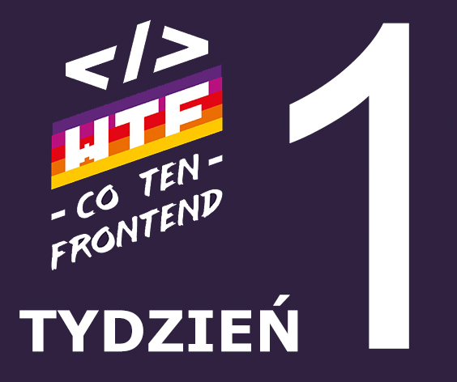

Tydzień 1:
2.02 Warstwy Strony Internetowej
Każda strona internetowa posiada 4 wartswy:
1. Treść strony
2. HTML
3. CSS
4. Java Script.
• !!! Jeżeli możemy coś zrobić za pomocą danego języka robimy to za
pomocą tego języka
2.03 WTF: HTML
Język HTML jest językiem znaczników odpowiadający za treść strony.
Budowa znacznika:
<znacznik atrybut=”wartość”>treść</znacznik>
Podstawowe znaczniki semantyczne:
-<main></main> - oznacza główną część dokumentu. (może
wystąpić tylko jeden na stronie.)
-<section></section> - sekcja dokumentu, która dzieli
stronę na poszczególne sekcjetematyczne.
-<article></article> - służy do oznaczania samodzielnych
grup treści na stronie. (nie jest zależna od sekcji.)
-<header></header> - Opisuje nazwę dokumentu, sekcji lub
artykułu na stronie. (może występować tylko jeden na daną sekcję)
-<footer></footer> - Opisuje stopkę dokumentu lub
sekcji.
-<h1-h6> - Tekstowe nagłówki tytułowe – dokumentu/ sekcji
numerujemy je po kolei w zależności od ważności danego nagłówka.
(znacznik H1 powinien występować tylko raz na stronie)
-<p> - odpowiada za paragraf i akapit.
• !!! Po napisaniu kodu strony warto sprawdzić go za pomocą validatora
W3C
2.04 WTF: CSS
Język CSS odpowiada za wygląd i prezentację strony.
Budowa reguły CSS:
selektor{
właściwość: wartość;
};
Plik ze stylami definiujemy w pliku HTML w części
<head></head> za pomocą znacznika:
<link href=„style.css” rel=”stylesheet” type=”text/css”>
2.05 Magia Programowania
W tej lekcji dowiedzietej lekcji dowiedzieliśmy się czym jest
programowanie w życiu codziennym.
Język Java Script odpowiada za interakcje na stronie internetowej.
2.06 DevTools
DevTools to inaczej narzędzia Developerskie. Wchodzimy w nie poprzez
opcję zbadania konkretnego fragmentu strony.
Opcja badania strony internetowej pomaga w podglądaniu, który fragment
kodu odpowiada za konkretną część bądź interakcję na stronie.